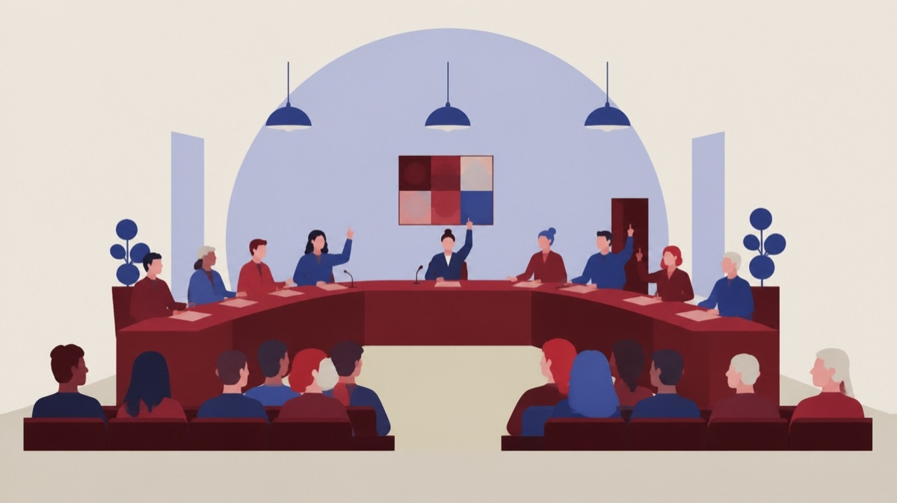

På dagsordenen 30. november, Kultur-, Fritid- og Landdistriktsudvalget, Vesthimmerland
Høringssvar - Anerkendelse og hædring af det frivillige arbejde

Kort fortalt
- Hvem
- Kultur-, Fritid- og Landdistriktsudvalget, Vesthimmerlands Kommune
- Hvornår
- Mandag 30. november 2026
- Status
- På dagsordenen. Sagen behandles på mødet.
Er noget forkert her? Skriv til os
Hvad kan du gøre?
- Skriv til politikerne
- Udvalgets møder er lukkede, men du kan skrive til medlemmerne før mødet mandag 30. november 2026. Du finder dem på vesthimmerland.dk.
Læs hele sagen Kommunens egen tekst
Baggrund
Der er modtaget følgende høringssvar:
Frivilligrådet:
Frivilligrådet ønsker ikke at være en del af et fælles arrangement og ønsker at frivilligprisen
fortsat uddeles i forbindelse med Frivillig Fredag. Frivilligrådet ser en voksende tilslutning til
Frivillig Fredag og ønsker at dagen fortsat markeres i sin nuværende form og kvalitet.
Fritidsrådet:
Fritidsrådet ønsker ikke at være en del af et fælles arrangement og ønsker, at rådets priser
fortsat uddeles i forbindelse med Frivillig Fredag i samarbejde med Frivilligrådet. Fritidsrådet
foreslår, at navnet ændres fra Frivillig Fredag til FrivilligGalla og at starttidspunktet rykkes til kl.
16 af hensyn til deltagelse fra personer på arbejdsmarkedet.
Landdistriktsrådet:
Landdistriktsrådet ønsker ikke at være en del af et fælles arrangement og ønsker at
landsbyprisen fortsat uddeles i forbindelse med det årlige Landsby Topmøde.
Kulturrådet:
Vesthimmerlands Kulturråd finder det betænkeligt at samle alle prisuddelinger i et
arrangement.
For Kulturrådets vedkommende er den model, hvor kulturprisen uddeles i forbindelse med
kulturugen, langt at foretrække. Kulturrådet er i forvejen engageret i kulturugens program på
den ene eller anden måde og derfor er det nærliggende at kulturpris og kulturuge hører
sammen.
Da Kulturrådet ikke har en forening eller klub med medlemmer i ryggen, er der heller ikke
garanti for et stort medlemsfremmøde ved en prisoverrækkelse, hvorfor
kulturprisoverrækkelsen risikerer at drukne i mængden af andre prismodtagere. For år tilbage
havde vi en model, hvor foreningspriser og kulturprisen blev uddelt samme aften med den
erfaring, at antallet af kulturpriskandidater druknede i
foreningspriskandidater af den simple grund, at foreningerne har flere medlemmer. Med de
erfaringer, holder vi gerne fast i den nuværende model.
Som en tilføjelse til sagsfremstillingen, der er lavet, skal nævnes, at Vesthimmerlands Kulturråd
afholder årsmøde hvert år i slutningen af marts jf vedtægterne. Dette ønskes ligeledes fortsat.
Administrationen bemærker at deltagerantal til Frivillig Fredag og Landsby Topmøde i år har
har slået rekorder med henholdsvis 420 og 145 deltagere. Fritidsrådets Topmøde er nyt i år, og
starter med et acceptabelt deltagerantal.
Forventet konsekvens
Ingen bemærkninger.
Organisering og kommunikation
Ingen bemærkninger.
Lovgrundlag
Ingen relevant lovgivning.
Økonomi
Nuværende arrangementer afholdes inden for Kultur-, Fritids- og Landdistriktsudvalget
budget.
Procesplan
Ingen bemærkninger.
Sagen afgøres i
Kultur-, Fritids- og Landdistriktsudvalget.
Indstilling
at høringssvar tages til efterretning,
at der på baggrund af høringssvar ikke arbejdes videre med FrivilligGalla og
at nuværende arrangementer fortsætter og udvikles inden for de respektive
områder.
Kilde: Vesthimmerlands Kommune, Kultur-, Fritid- og Landdistriktsudvalget, dagsorden fra mødet mandag 30. november 2026, punkt 14. Læs den originale sag hos kommunen.